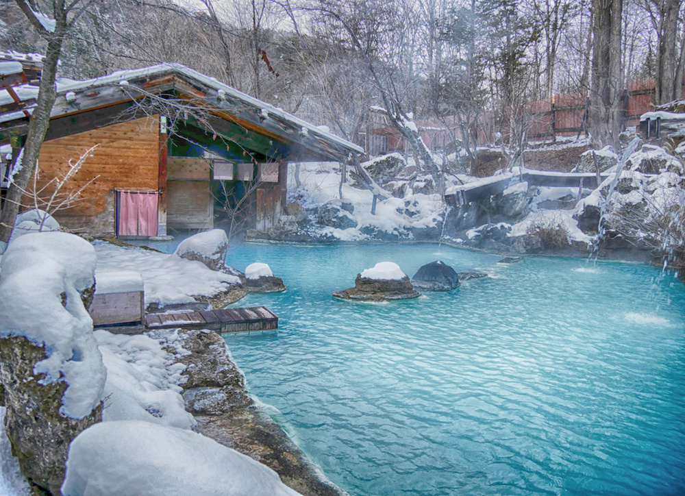

Fun in Japan
Anime
Anime refers specifically to animation from Japan or as a Japanese-disseminated animation style often characterized by colorful graphics, vibrant characters and fantastical themes.

Sashimi
Sashimi (刺身) is a Japanese delicacy consisting of fresh raw fish or meat sliced into thin pieces and often eaten with soy sauce.

Onsen
An onsen (温泉) is a Japanese hot spring. As a volcanically active country, Japan has thousands of onsens scattered throughout all of its major islands.